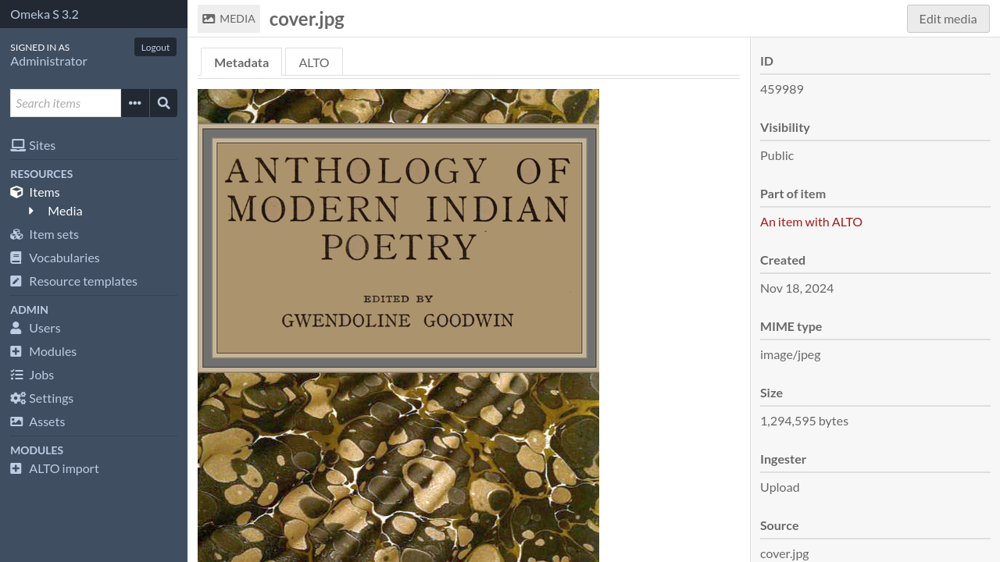
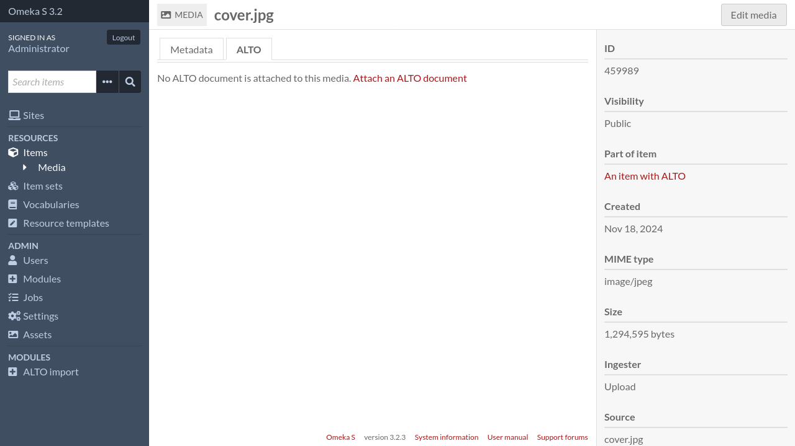
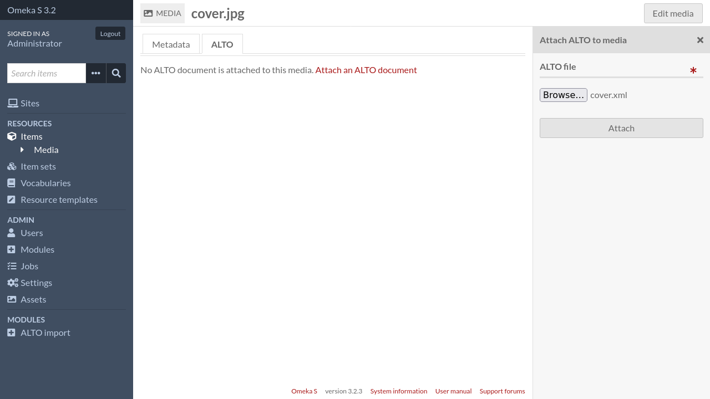
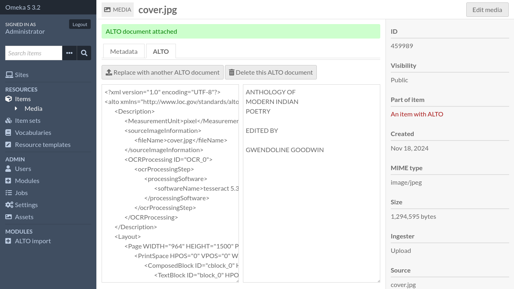
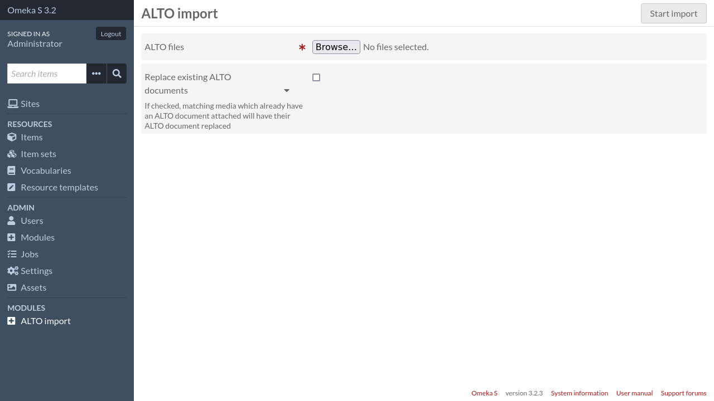

Attacher ALTO à un média
Import manuel
Pour attacher un document ALTO à un média, allez sur la page du média dans l’interface d’administration.
Cliquez sur l’onglet « ALTO ».
Cliquez sur « Attacher un document ALTO ». Une barre latérale s’ouvrira.
Sélectionnez votre fichier ALTO et soumettez le formulaire.

Import par log
Pour importer plusieurs fichiers ALTO en une seule fois, cliquez sur « Import ALTO » dans le menu de navigation d’administration.
Depuis cette page, vous devez sélectionner tous les fichiers ALTO que vous voulez importer.
Important
Les fichiers ALTO seront attachés aux médias dont le nom de fichier (ou « source ») correspond au nom du fichier ALTO. Par exemple, un fichier ALTO nommé PAGE0001.xml sera attaché au média dont le nom de fichier correspond à PAGE0001.{extension} (ex: PAGE0001.png).
Si aucun média ou plusieurs médias correspondent, le fichier ALTO n’est pas importé.
Options
- Remplacer les documents ALTO existants
Si coché, les médias correspondants qui ont déjà un document ALTO attaché auront leur document ALTO remplacé